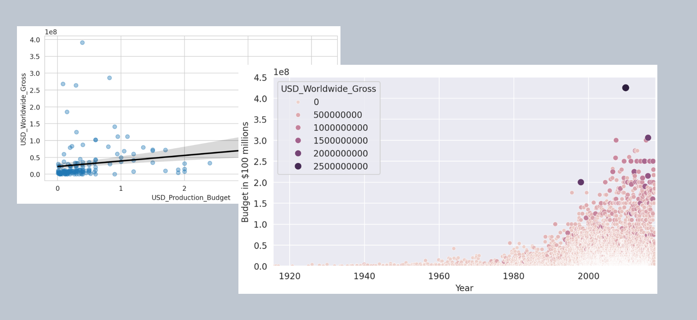

Exploring Film Revenue Trends with Python
Explore the captivating world of film revenue trends with Python in Google Colaboratory. This notebook offers a comprehensive analysis of a dataset containing movie details, including production budgets, domestic and worldwide gross revenues, and release dates. By leveraging libraries such as Pandas, Matplotlib, Seaborn, and Scikit-learn, the user embarks on a journey of data cleaning, statistical analysis, and visualization. Through interactive visualizations and regression analysis, insights into trends, patterns, and factors influencing movie revenue are unveiled. Join the exploration and uncover the secrets behind box office success!